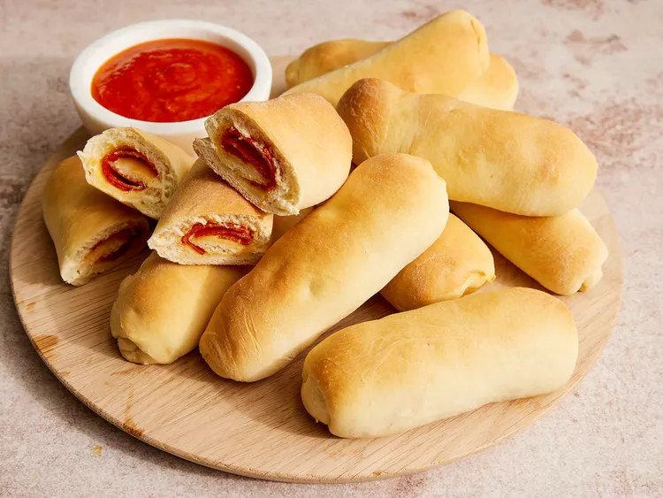
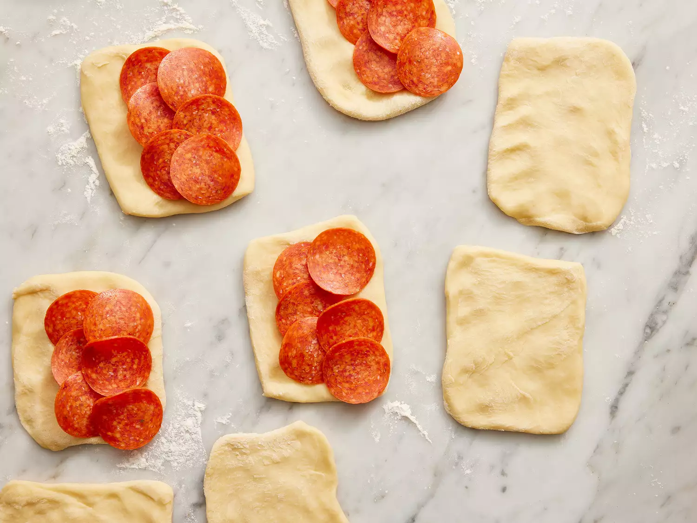

Peperoni Rolls

Danie to w postaci takiej lub innej powinno zaspokoic podstawowa potrzebe glodu w godzinach porannych
Jego cecha jest wytrawny charakter ktory to charakter jest kurwa zaleta dla osob lubiacych takie smaki
- 1 cup warm water
- ½teaspoon white sugar
- 1 package active dry yeast
- 5 cups all-purpose flour
- ¾cup white sugar
- 2 teaspoons salt
- 2 eggs, beaten
- ½cup butter, melted
- 1 package sliced pepperoni
- ½lyzeczki cukru zmieszaj ze szklanka cieplej wody i drozdzami. Zostaw na 5 min
- Zmieszaj make, cukier, sol. Dodaj plynne drozdze, wbij jaja, dodaj plynne maslo. Wszystko bardzo dobrze wymieszaj na jednolita mase
- Przeloz mase do natluszczonej miski, przykryj czysta szmata i daj do cieplego miejsca na 1½ godz.
- Rozgrzej piekarnik do 175 C(350F)
- Wyloz ciasto. Zrob ok. 20 kulek wielkosci pilki golfowej
- Zrob tak:

Zwin i piecz ok. 15 min.- az sie zezloca.